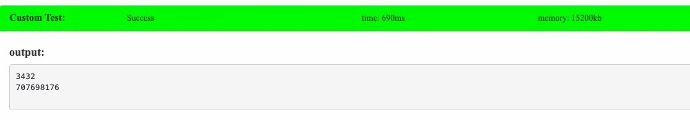

之前一直以为会很难，但在重听了 dls 讲的课之后感觉好像有点深刻，于是打算整理一下。
另附 pks 词典：
『有点深刻』：感觉好像听明白了，但是还有细节没太懂，如果要是让我写我肯定写不出来。
『有点神奇』：大致都听明白了，精髓什麽的都理解的十分透彻，只是实现方面还是不太会。
『 』(无评价) ：学会了。
原理
大概是一种需要维护信息具有可减性的莫队。只要具可减性，就可以容斥，就可以二次离线。所谓『二次离线』，大概是指由于普通莫队无法快速计算贡献，所以第一次离线把询问离线下来，第二次离线把莫队的转移过程离线下来。然后由于信息具有可减性(比如常见的「点对数」)，那么可以：
记 $(a,b)(c,d)$ 表示区间 $[a,b]$ 内的点和区间 $[c,d]$ 内的点对彼此产生的贡献(区间内部不算)。
1、如果 $[l,r]\to [l+t,r]$ ，那么可知
2、如果 $[l,r]\to [l-t,r]$ ，那么可知
3、如果 $[l,r]\to [l,r+t]$ ，那么可知
4、如果 $[l,r]\to [l,r-t]$ ，那么可知
其中 $\sum$ 并不是真正的 $\sum$ ，不同情况下需要按顺序(即不再有交换律)，比如 $[l,r]\to [l,r-t]$ 时就需要从 $r-1$ 算到 $r-t$ 。
然后这样容斥之后，后面的 $\sum$ 就可以预处理了，前面的 $()()$ ，由于莫队的复杂度，可以知道至多有 $n\sqrt m$ 个不同的询问，这样就可以把每一组询问打标记，打到左端点是 $1$ 的那个询问上 (比如 $[l,r]\to [l,r-t]$ 就打到 $l-1$ 上)。最后扫一遍全部的 $i\in[1,n]\cap\mathbb{Z_+}$，这样最终复杂度 $O(n\sqrt m)$ 。可以看出比起普通的莫队，二次离线还有一个好处，就是只有 $O(n)$ 次插入，于是对于某些题就可以用值域分块的技巧做到 $O(n\sqrt m+n\sqrt n)$ 。
实现
LG 4887 第十四分块(前体)
珂朵莉给了你一个序列 $a$，每次查询给一个区间 $[l,r]$
查询 $l \leq i< j \leq r$ ,且 $a_i \oplus a_j$ 的二进制表示下有 $k$ 个 $1$ 的二元组 $(i,j)$ 的个数。$\oplus$ 是指按位异或。
似乎就是板子题，然后对于 $(i,i)(1,i-1)$ 和 $(i,i)(1,i)$ 这个东西的预处理可以拿一个桶来维护，$buc_x$ 表示有多少个数 $\oplus x$ 之后二进制位有 $k$ 个 $1$ ，剩下的就是比较典型的莫队二次离线了。
值得一提的是…$\binom{14}{7}=3432$ ，再乘上一个 $10^5$ ，时间根本承受不了…所以这就很神必…打算写完之后出个数据卡一卡，不知道能不能成功。
1 |
|
顺便结束之后卡了一下，写了个觉得肯定可以卡的 gen：
1 |
|
结果：

其中第二行是我拿一个计数器，记了一下运算量。$7e8$ 能稳过 $1s$，这就很睿智，我果然跟时代脱节了。
例题&总结
由于个人感觉很有整理价值，于是决定新开一篇整理（
之前一直觉得二次离线会很难，学了学觉得其实还可以。并且没准二次离线这个技巧可以利用到其它地方？或许吧。
莫队系列似乎是都学完了，爷的青春结束啦！